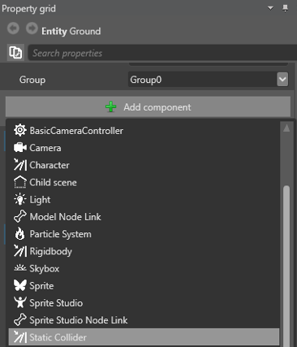
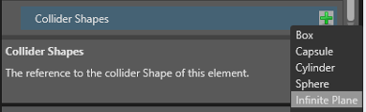
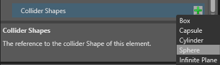
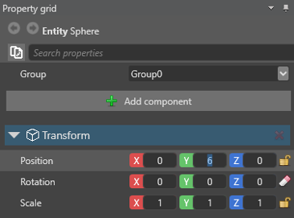
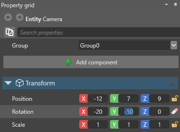
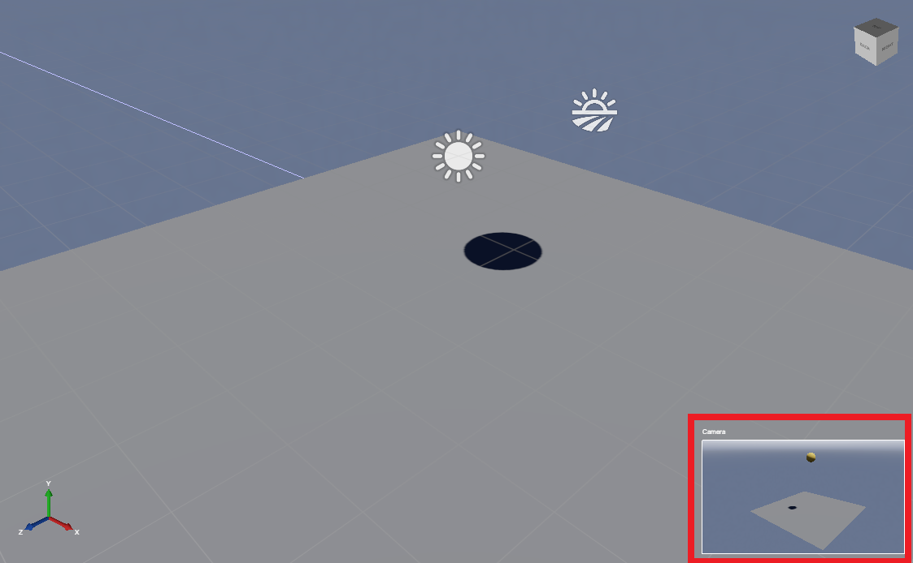
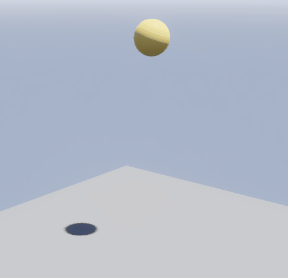
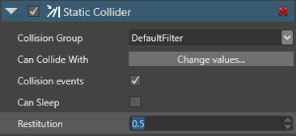
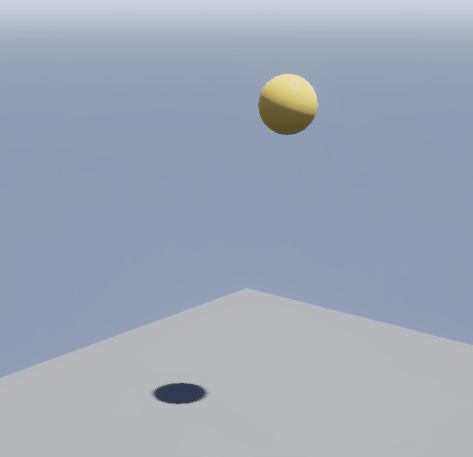
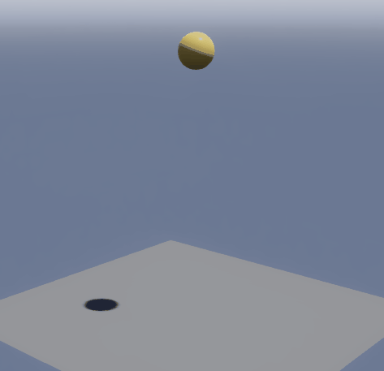

Create a bouncing ball
Beginner Designer
In this tutorial, we'll use the static collider and rigidbody components to create a ball bouncing on a floor.
Note
The screenshots and videos in this tutorial were made using an earlier version of Stride, so some parts of the UI, and the default skybox and sphere, might look different from your version.
1. Create a new project
Start a New Game project.
The default scene comes pre-loaded with five entities: Camera, Directional light, Skybox, Ground, and Sphere. We're going to add physics components to the Ground and Sphere entities.
2. Add a static collider
Let's begin by adding a static collider component to the Ground entity. A static collider is a physics object that doesn't move. Typical static colliders are walls, floors, large rocks, and so on. In this case, the static collider will give the ball something to bounce on.
Select the Ground entity.
In the Property Grid, click Add component and select Static Collider.

Set the collider shape to match the shape of the entity. To do this, in the Property Grid, expand the Static Collider component to view its properties.
Next to Collider Shapes, click
 (Add) and select Infinite Plane.
(Add) and select Infinite Plane.
This adds a static collider to the ground, so the ball has something to bounce off.
3. Add a rigidbody collider
Next, we'll add a rigidbody component to the sphere. A rigidbody is a physics object that moves — perfect for our bouncing ball.
In the Scene Editor, select the Sphere entity.
In the Property Grid, click Add component and select Rigidbody.

Just like we did for the Ground entity, set the collider shape to match the entity. To do this, in the Property Grid, expand the Rigidbody component to view its properties.
Next to Collider Shapes, click
(Add) and select Sphere.
4. Position the ball
Let's position the sphere so it starts in mid-air and falls to the ground.
Select the Sphere entity.
In the Property Grid, under Transform, set the Position to: X: 0, Y: 6, Z: 0

This places the ball in mid-air above the ground.
5. Position the camera
Now we'll move the camera to give us a good view of the scene.
Select the Camera entity.
In the Property Grid, under Transform, set the Position to: X: -12, Y: 7, Z: 9
Set the Rotation to: X: -20, Y: -50, Z: 0

You can see preview the camera view in the Camera preview in the bottom-right of the Scene Editor.

6. Set the restitution
Let's see what the scene looks like so far. To run the project, press F5.

The Sphere (rigidbody) responds to gravity and falls. The Ground (static collider) breaks its fall. But there's no bounce effect yet.
To create a bounce effect, we need to change the restitution of the Sphere and the Ground. This simulates the coefficient of restitution (Wikipedia) of real-world collisions.
- If the restitution property of colliding entities is 0, the entities lose all energy and stop moving immediately on impact.
- If the restitution is 1, they lose no energy and rebound with the same velocity at which they collided.
- If the restitution is higher than 1, they gain energy and rebound with more velocity.
As a rule, to create realistic collisions, set the restitution between 0 and 1.
Let's set the restitution of our Sphere and Ground entities.
Select the Sphere entity.
In the Property Grid, under Rigidbody, set the Restitution to 0.8.

Select the Ground entity.
In the Property Grid, under Static Collider, set the Restitution to 0.5.

To see how this changes the physics, run the project again (F5). This time, the ball bounces on the ground before coming to a stop:

Try changing the restitution of both entities to 1. This creates a ball that bounces indefinitely, losing no energy:

Set the restitution to 1.1 and the ball bounces a little higher each time:

Now we've created a bouncing ball, we can use it to learn about triggers. For more information, see the Script a trigger tutorial.